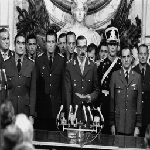
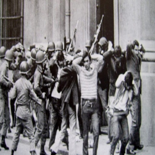
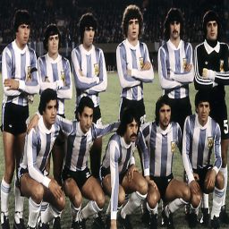
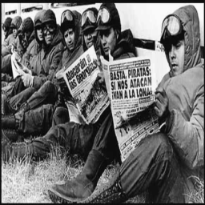
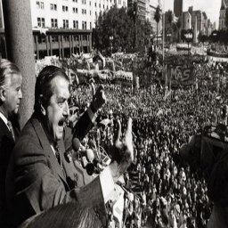

Dictadura de 1976
Este sitio esta dedicado a los acontecimientos de la ultima dictadura de Argentina.
Linea del tiempo:

Golpe de estado
El día 24 de marzo de 1976 ocurrió un golpe de estado en la argentina que dio inicio a la dictadura cívico militar de Rafael Videla, la cual fue la ultima dictadura de Argentina.
24 de marzo de 1976

La noche de los lapices
En la noche del 16 de septiembre de 1976 en La Plata, un grupo de estudiantes fueron secuestrados y varios de ellos quedaron desaparecidos por parte de la dictadura.
16 de septiembre de 1976

Mundial Argentina 78
Mientras en los estadios todo era felicidad y alegría por el campeonato del mundo, el gobierno estaba al mando de centros clandestinos y tortura.
Junio de 1978

Guerra de Malvinas
Argentina el día 2 de abril de 1982 al mando de Galtieri dio inicio a un conflicto bélico con Inglaterra por la soberanía de las islas Malvinas.
2 de abril de 1982

Vuelta a la democracia
El 10 de diciembre de 1983 argentina vuelve a la democracia con la presidencia de Raúl Alfonsín y termina con su ultima dictadura.
10 de diciembre de 1983